[ICDE'22] PICASSO: Unleashing the Potential of GPU-centric Training for Wide-and-deep Recommender Systems 论文阅读
PICASSO（Packing, Interleaving and Caching Augmented Software System Optimization）是阿里巴巴智能引擎事业部广告训练引擎 XDL 团队和阿里云计算平台 PAI 团队深度合作研发的成果，在集团内部 PICASSO 作为 XDL2、PAI-Tensorflow 和 PAI-HybridBackend 三个产品服务于搜索、推荐、广告业务。
#0. 摘要
个性化推荐的发展显著提高了信息匹配的准确性和电子商务平台的收入. 近期 (2022 年), 该领域呈现出两大趋势:
- 推荐系统必须及时进行训练, 以应对在线营销和社交网络中不断涌现的新产品以及不断变化的用户兴趣;
- 最先进的推荐模型引入了深度神经网络 (DNN) 模块以提高预测准确率.
传统的基于 CPU 的推荐系统已无法满足这两大趋势, 以 GPU 为中心的训练已成为一种主流方法. 然而, 我们观察到在训练推荐系统时, GPU 设备的利用率不足, 且无法达到其在计算机视觉 (CV) 和神经语言处理 (NLP) 领域所实现的预期吞吐量提升.
这一问题可归因于这些推荐模型的两个特征: 首先, 它们包含多达上千个输入特征字段, 导致了碎片化和内存密集型操作; 其次, 多个组成的特征交互子模块引入了大量的小规模计算内核. 为了消除这一阻碍推荐系统发展的障碍, 我们提出了一种名为 PICASSO 的新型框架, 旨在加速推荐模型在商用硬件上的训练. 具体而言, 我们进行了系统分析, 揭示了训练推荐模型时遇到的瓶颈. 我们利用模型结构和数据分布, 通过打包、交错和缓存优化来释放硬件潜力. 实验表明, PICASSO 在最先进基线的基础上将硬件利用率提高了一个数量级, 并为多种工业级推荐模型带来了高达 6 倍的吞吐量提升. 在生产环境中使用相同的硬件预算, PICASSO 平均将每日训练任务的实际耗时缩短了 7 小时, 显著减少了持续交付的延迟.
#1. 引言
如今 (2022 年), 推荐系统已成为社交网络和电子商务平台提高收入、用户参与度和客户留存的关键. 为了应对数据的爆炸式增长, 推荐系统正迅速从协同过滤 (CF) 演变为深度神经网络 (DNN) 模型, 并持续提高任务准确率, 如图1所示. 从 Google 的 Wide&Deep 开始, 工业级推荐模型的创新遵循两个趋势:
- 嵌入层变得更宽, 消耗多达数千个特征
- 特征交互层通过利用不同特征子集上的多个 DNN 子模块变得更加深层.
我们将这些模型称为 Wide-and-Deep Learning (WDL) 推荐模型.
工业级 WDL 模型必须定期重新训练, 以及时、准确地反映用户兴趣漂移和新的热点. 因此, 高训练吞吐量对于 WDL 模型追赶流式数据并降低持续交付的延迟至关重要. 由于缺乏完成深度特征交互的计算能力, 在大规模分布式 CPU 集群上通过参数服务器 (PS) 训练最先进的 WDL 模型非常耗时. 近期的研究工作, 以 Facebook 的 TorchRec、百度的 PaddleBox 和 NVIDIA 的 HugeCTR 为代表, 倾向于在 WDL 工作负载上采用以 GPU 为中心的同步训练框架, 因为高端 NVIDIA GPU (例如 NVIDIA Tesla V100) 的单精度浮点运算速度比 Intel CPU 高出 30 倍. 这些工作大多通过利用 GPU 设备提高了训练吞吐量.
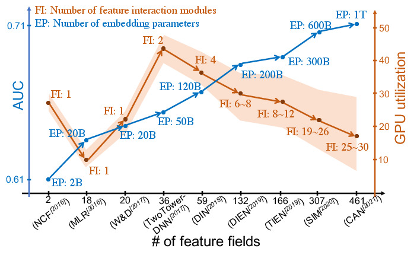
图 1. WDL 的趋势从阿里巴巴一项业务的角度出发. 这些模型的平均 GPU 利用率通过内部优化的 Tensorflow in PS 训练策略从训练工作负载中收集. 统计数据显示, 除了性能提升外, WDL 模型的训练并未充分利用标准训练框架 (在训练同等规模的 CV 或 NLP 模型时 GPU 利用率可达 95%+) .
然而, 如图 1 所示, 我们观察到随着特征字段和特征交互模块数量的增加, 存在严重的硬件资源利用率不足 (例如, 测得的 GPU 利用率). 这意味着 WDL 训练工作负载远未达到硬件的峰值性能, 预期可进一步加速. 虽然针对特定的 WDL 工作负载模式定制硬件可能是一种选择, 但存在以下顾虑:
- 我们有多种 WDL 设计, 它们拥有显著不同的工作负载模式 (例如, 特征字段的数量、特征交互层的子模块), 且新的 WDL 模型每月都在涌现;
- 对于公有云使用, 出于预算和弹性的考虑, 首选商用硬件.
因此, 我们提出两个问题: 是什么导致了训练 WDL 模型时的硬件利用率不足问题? 我们能否从软件系统的角度解决这个问题? 我们对各种 WDL 工作负载进行了系统分析 (详见 2), 并得出如下启示:
- 由于特征字段数量巨大 (多达数千个), WDL模型训练在嵌入层和特征交互层内包含碎片化操作, 这带来了启动操作 (例如向CUDA流发布CUDA内核) 的不可忽视的开销以及硬件利用率不足的问题.
- WDL模型的嵌入层主要由内存密集型和通信密集型操作组成 (在分布式环境中), 而特征交互和 MLP 则包含计算密集型操作. 在处理大量嵌入参数时, 计算资源利用率不足, 从而导致脉冲式的GPU使用模式.
随后, 我们提出了一个新颖的框架——包含打包、交错和缓存增强的软件系统优化 (PICASSO), 以回答上述两个问题.
- 我们创建细粒度的嵌入特征组. 同一组内的操作被打包以减少碎片化操作的数量;
- 来自不同组的操作在数据层和内核层两个层面进行交错, 以提高硬件利用率;
- 我们开发了一种数据分布感知的缓存机制, 利用大容量DRAM和GPU设备内存的高带宽.
评估表明, PICASSO 在训练多种工业级 WDL 模型时显著提高了 GPU 利用率, 并且与最先进的通用训练框架 (TF 1.15+PS, PyTorch+All2All, PyTorch+AllReduce) 相比, 将吞吐量提高了一个数量级. PICASSO 已部署在我们的内部训练集群中, 在阿里巴巴内部被称为 XDL2, 在阿里云中被称为 HybridBackend. 将持续交付的延迟从平均 8.6 小时降低到 1.4 小时, 这在阿里巴巴内部是前所未有的, 并对社区具有指导意义. 本文的主要贡献总结如下:
- 我们分析了使用以 GPU 为中心的同步框架训练 WDL 模型时硬件利用率不足的问题, 并揭示了其原因.
- 我们提出的 PICASSO 采用软件系统方法解决硬件利用率不足的问题, 该方法适用于通用硬件.
- 我们构建了一个系统, 能够支持我们日常生产工作负载, 处理高达万亿个参数和 PB 级训练数据, 在未增加预算的情况下实现了平均6倍的训练性能提升. PICASSO 已发布, 可用于公共云.
#2. 基于 Workload 分析的启示
#2.1. WDL 模型架构
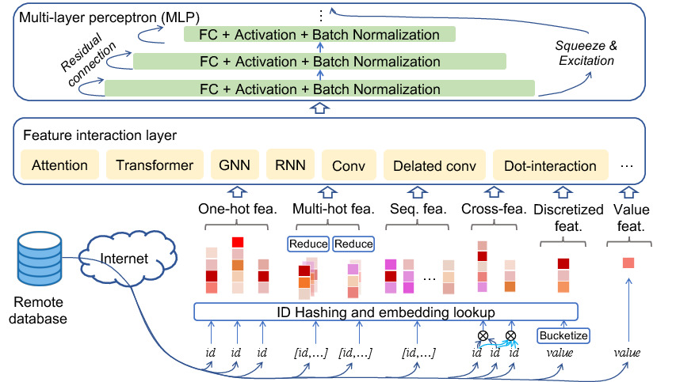
图 2. WDL 的标准架构, 1) 嵌入层 吸收多个特征字段 (不同于只有一个 “word” 字段的 NLP 任务), 采用各种哈希或数值操作, 并从内存中查询 (不同维度的) 嵌入; 2) 特征交互层 通过多个特征交互模块处理取样的特征嵌入; 3) 模块的输出被串接并输入 MLP 以获得最终预测.
WDL 模型具有如图2所示的典型架构:
数据传输层 处理以类别特征身份 (ID) 以及稠密特征向量形式传输的流式训练数据. 类别特征ID通常具有可变长度 (即多热或非表格数据), 并且在一个批次内可能达到数十或数百兆字节. 通常, 数据存储在远程数据库中, 需要通过以太网进行传输;
嵌入层 将稀疏类别特征的高维特征空间投影到低维嵌入特征空间. 嵌入参数以名为特征嵌入的稠密向量表示, 并以嵌入表的形式存储在DRAM中. 每个特征嵌入都可以通过其类别特征ID进行查询, 以便在WDL中进行训练. 由于每个训练批次需要从DRAM中查询大量特征嵌入, 因此嵌入层主要由访存密集型操作主导.
特征交互层 首先将来自嵌入层的特征嵌入组织成若干组. 每组应用一个独立的特征交互模块, 例如 GRU 和 Transformer, 以从组内特征嵌入中提取有用信息. 然后, 将组成特征交互模块的输出进行拼接, 以形成特征交互层的最终输出. 该层中可能存在数十个组成特征交互模块, 以处理层中的主要激活特征嵌入的不同子集, 产生多达数十万次运算.
MLP 利用一批次训练数据构建全连接层, 以提供最终预测. MLP还包含计算密集型架构单元, 如批归一化和残差连接. 值得注意的是, 在许多业务场景中, 精度损失通常是不可接受的. 因此, 通用加速策略 (例如半精度、量化剪枝、梯度 staleness) 可能仅适用于部分WDL模型.
#2.2. WDL 工作负载中的数据分布
每个特征字段的类别特征ID通常呈偏斜或非均匀分布. 我们研究了五个代表性 WDL 数据集的数据分布 (统计数据列于表 2 中) 及图 3. 当按频率降序排列时, 平均而言 20% 的 ID 将覆盖 70% 的训练数据, 最高可达 99%. 因此, 在训练WDL模型时缓存频繁访问的数据是有益的.
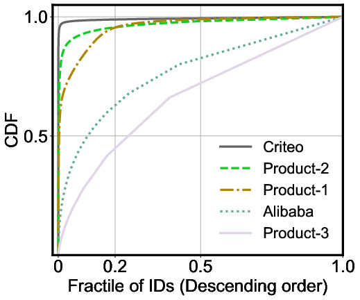
图 3. 类别特征 ID 在代表性 WDL 数据集中的分布.
#2.3. WDL 模型的分布式训练策略
总体而言, 在以 GPU 为中心的分布式系统中训练 WDL 模型时, 通常采用三种训练策略:
参数服务器 (PS) 策略仍是工业界实际应用的主流训练策略, 其中训练数据被划分到多个工作节点, 而模型参数则被划分到多个服务器节点. 工作节点从服务器节点拉取 (pull) 模型参数, 并利用本地划分的训练数据进行训练; 在每次迭代结束时, 工作节点将相应的梯度异步推回 (push) 服务器节点以更新参数.
数据并行 (DP) 策略是 Tensorflow 和 PyTorch 等框架的默认分布式训练策略. 训练数据被均匀划分到所有工作节点, 而模型参数则被复制到所有工作节点. 它使用一种名为 Allreduce 的集合通信原语来聚合梯度, 从而同步更新模型参数的本地副本.
模型并行 (MP) 策略不存在服务器节点. 相反, 它将所有参数划分并存储在多个工作节点上. 然后, 它使用一种名为 AllToAllv 的集合通信原语在所有工作节点之间同步交换数据.
#2.4. WDL 工作负载的特征分析
我们首先将WDL工作负载到底层硬件进行底层映射, 随后总结三种代表性工作负载模式.
从算法角度来看, 每个 WDL 层由一组算子组成. 算子在程序中通常实现为内核 (kernel), 其在训练过程中的调用被称为操作 (operation). 操作的执行需要各种硬件资源. 图 4 展示了在分布式系统中训练的标准 WDL 模型针对三种硬件资源的底层投影:
- 节点内带宽 (例如 DRAM 和 PCIe 带宽)
- 计算资源 (例如 GPU 流式多处理器)
- 节点间带宽 (NVLink 和以太网带宽)
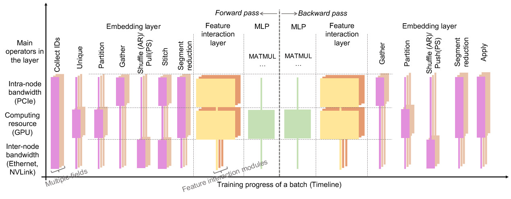
图 4. WDL 模型标准架构的低层投影: 多特征字段和组成特征交互模块, 会在计算图中造成大量重复操作.
在 WDL 模型的分布式训练中, 嵌入层主要包含以下算子:
Unique: 消除冗余类别特征 ID 以减少内存访问开销Partition: 将类别特征 ID 划分为本地 ID 和远程 IDGather: 从嵌入表中查询本地 IDShuffle: 与远程工作节点通信以获取属于远程 ID 的特征嵌入Stitch: 拼接本地查询的特征嵌入和远程获取的特征嵌入SegmentReduction: 按段对特征嵌入进行池化, 例如对同一用户的行为特征嵌入求和.
嵌入层中的大多数算子受限于一种主导类型的硬件资源 (例如, Shuffle 算子受限于节点间带宽). 特征交互层和 MLP 的算子主要受限于计算资源. 类似地, 反向传播可以被视为前向传播的镜像. 在同步的以 GPU 为中心的训练系统中, 这种底层投影表明硬件资源的使用是间歇性的, 这意味着在某一时刻, 训练将受限于一种类型的硬件资源, 而其他类型的资源则未被充分利用. 与 CV 和 NLP 工作负载相比, 该投影反映了 WDL 工作负载的三个特征.
- 嵌入层和特征交互层涉及大量小规模操作 (即, 单个特征字段的嵌入可能涉及数百次操作, 而WDL工作负载可能需要处理多达数千个特征字段), 这会带来显著的启动开销.
- 不同特征字段对嵌入层中同一算子的调用会在同一时刻争用同一类型的硬件资源, 这在硬件资源相对紧张时 (例如, CPU与GPU之间的PCIe带宽) 会限制吞吐量.
- 如 2.2 所述的数据倾斜分布会导致分布式系统中工作节点间的硬件资源使用不均衡, 从而在同步训练期间损害吞吐量.
我们调研了阿里巴巴云上一组 NVIDIA Tesla V100 (表 1 中的 EFLOPS) 上 WDL 工作负载的统计数据 (由如所述的商用硬件设备组成). 这些模型由 Tensorflow 实现, 采用如 2.3 介绍的PS策略或MP策略. 从性能剖析和工作端性能分解中, 我们观察到了如图 5 所示的三种代表性模式.
I/O 和内存密集型工作负载. 以 W&D 为代表的 WDL 模型包含大量的数据传输和嵌入查找操作, 其中I/O可能无法完全与其他过程重叠, 如图 5 所示. 随着特征工程和可迁移预训练嵌入的蓬勃发展, I/O 和内存密集型模型应运而生, 这些模型需要处理海量特征字段才能达到最佳精度. 即使进行了 I/O 优化, 如图 5 所示, 暴露的 I/O 和内存访问仍然占用总训练时间的约 20%.
通信密集型工作负载. 这类工作负载的大部分时间都花费在通信相关的操作上. 由于获取远程高维嵌入特征产生的大量通信, 以及来自高阶交叉特征的频繁参数交换, 导致分布式WDL工作负载中产生严重的通信开销. 我们以 CAN 为例, 它是最近从 DIN 和 DLRM 衍生而来的. CAN 包含大量特征字段上的特征交互模块的组合, 因此如图5所示, 它在MP模式下带来了约 60% 的通信开销, 在PS模式下带来了约 70% 的通信开销.
计算密集型工作负载. 由于深度和复杂的 WDL 模型受益于 CV 和 NLP 领域的进步, 部分 WDL 模型受到计算操作的制约. MMoE 的一种变体源自标准 DIN, 在 MLP 中拥有71个专家, 用于我们业务中场景感知的CTR预测. 在图 5 中, MMoE 大约花费 50% 的训练时间进行算术计算. 在实践中, 计算密集型 WDL 模型倾向于应用于多子任务场景 (例如, 多目标学习、元学习)、超复杂计算 (例如, 大量特征字段上的极深网络) 和多模态协同训练.
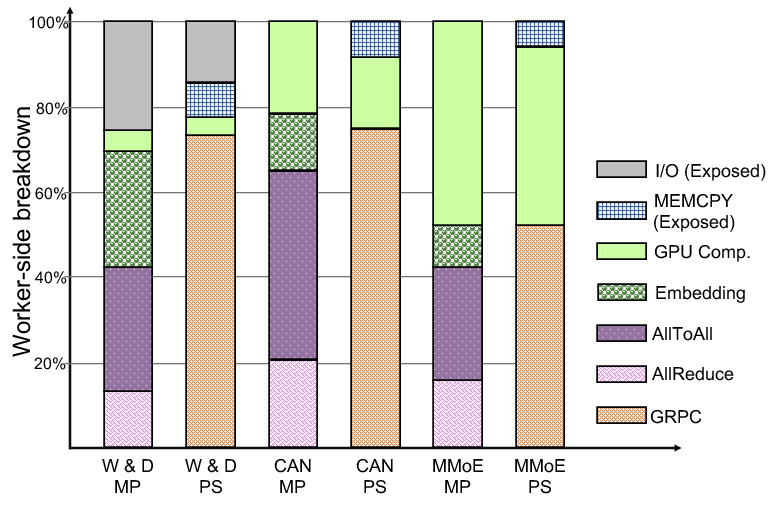
图 5. 按 PS 和 MP 策略对三种 WDL 模型的 Worker 端拆解 (“Exposed” 表示该作阻塞所有其他模型的阶段) .
#3. PICASSO 系统设计
在本节中, 我们首先介绍PICASSO的整体架构, 该架构适应以GPU为中心的训练集群的硬件拓扑, 从而支持WDL模型的混合分布式训练策略. 其次, 我们介绍通过提高硬件利用率来加速训练的三个核心思想.
#3.1. 混合分布式训练策略
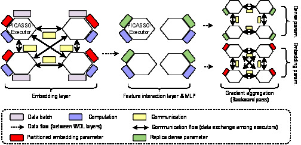
图 6. PICASSO 支持 MP 和 DP 的混合策略, 嵌入参数在 PICASSO 执行器 (MP) 之间划分, 密集参数在 PICASSO 执行器 (DP) 间复制. 此外, PICASSO 也支持规范的 DP 和 MP.
我们在图6中提出了 PICASSO 的架构, 该架构专为以GPU为中心的集群而设计. 此类集群通常由多台配置相同的机器 (集群节点) 组成, 而每台机器则具有异构架构, 包括处理器 (如 Intel CPU) 、加速器 (如 NVIDIA GPU) 以及非核心系统 (如 DRAM). 此外, 机器内部各组件之间存在 PCIe 和 NVLink 等互连, 且所有机器进一步通过以太网连接, 构成一个分布式系统. 相应地, PICASSO 设置了多个 PICASSO-Executor, 它们分别映射到集群中的不同机器. 每个 PICASSO-Executor 拥有异构硬件资源:
- GPU 流多处理器 (SM) 和 CPU 物理核心作为计算资源;
- 由 GPU 设备内存、DRAM、Intel 持久内存和 SSD (如果可访问) 构成的分层内存子系统作为内存存储资源;
- NVLink、PCIe、InfiniBand和以太网等分层互连作为通信资源.
借助该架构, PICASSO 能够针对 WDL 模型中的不同层定制混合分布式训练策略, 具体如下:
- 嵌入层拥有海量的嵌入参数, 并采用模型并行 (MP) 策略. 嵌入参数在所有 PICASSO-Executors 之间进行分区, 并存储在分层内存子系统中. 参数通过 AllToAllv 集合通信原语在 PICASSO-Executors 之间进行同步交换.
- 特征交互层和 MLP 的参数量远小于嵌入层. 我们对这两层采用数据并行 (DP) 策略, 其中参数在所有 PICASSO-Executors 上进行复制, 并通过 Allreduce 原语进行聚合.
#3.2. Packing
为了解决 2.4 中所述的碎片化操作问题, 我们提出了一种打包方法, 该方法从两个方面有效减少了操作数量:
数据打包 (D-Packing). 当来自不同特征域的分类特征 ID 输入到嵌入层内的同一算子时, PICASSO 将分类特征 ID 组合成单个打包 ID 张量. 因此, 我们可以启动单个操作 (称为打包操作) 来处理打包数据, 这符合 NVIDIA GPU 设备的单指令多数据 (SIMD) 编程范式. 此外, 它显著减少了向 GPU 设备启动大量操作的开销.
此外, 将所有类别特征ID打包到单个张量中的朴素策略可能会导致严重的吞吐量问题. 例如, 工业级推荐系统通常使用哈希表来实现嵌入表, 以适应不断增长的特征嵌入数量. 海量的 (百万级) 并发查询请求将受限于哈希表底层的锁机制. 因此, 我们在嵌入表共享相同特征维度时对类别特征ID进行打包. 从而, 我们获得的打包操作的数量与不同特征维度的数量成正比. 然而, 由于数据分布偏斜和特征维度较大, 某些打包操作仍可能面临过多的并发查询, 从而损害哈希表的吞吐量. 我们提出了一种通过估计打包操作内的参数量 (浮点数数量) 来评估执行成本的方法, 如公式1所示.
其中, N 表示类别特征 ID 的总数, T 表示打包的嵌入表, t dim 表示嵌入表的特征维度, ID freq 表示类别特征 ID 的频率. N 和 ID freq 可从预热迭代的统计信息中获取. 如果某个打包操作的 CalcVParam(T) 较高且高于平均水平, 我们应将其进一步均匀拆分为多个分片. 例如, 假设我们有一个针对所有特征维度为 8 的嵌入表的打包操作, 且数据分布均匀. 对于维度为 32 的嵌入表, 我们将创建四个打包操作分片, 每个分片包含这些嵌入表的四分之一.
内核打包 (K-Packing). 内核融合已是深度学习系统中广泛采用的一种优化技术. 主要存在两种方法:
- 手写的大型内核 (例如将整个嵌入层融合到单个 CUDA 内核中) 会错失受不同硬件资源限制的操作交错执行的机会 (详见 3.3).
- 基于编译的代码生成 依赖于每个算子的静态输入和输出形状来推断生成内核的合适大小. 然而, 分类特征ID会导致动态算子形状, 从而破坏Tensorflow XLA等编译技术的效率.
相比之下, 我们的内核打包根据硬件资源利用率评估所有内核, 并将它们分为计算密集型内核, 内存密集型内核 和 通信密集型内核. 我们仅融合来自同一内核组的内核, 并为跨内核组交错执行保留机会.
图 7 展示了我们的打包优化过程. 分类特征ID首先被分组在一起 (即D-Packing). 每组分类特征ID被输入到一个名为Unique&Partition的融合内核 (即K-Packing) 中, 以消除来自冗余ID的内存访问和数据通信. 分类特征ID将从其嵌入表的本地分区中获取. 然后, 我们开发了另一个名为Shuffle&Stitch的融合内核, 以实现shuffle kernel的拼接输出, 并移除显式的stitch kernel.
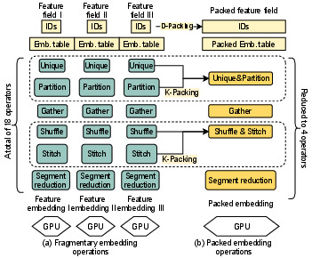
图 7. 打包优化示例: a) 不打包时, 从三个嵌入表查找特征嵌入需要 18 次操作; b) 通过 D-打包 和 K-打包, PICASSO 将操作总数减少为 4 个打包操作.
#3.3. 交错
在应用了打包优化之后, 我们进一步开发了两种类型的交错优化, 以提高不同硬件资源的利用率.
数据交错 (D-Interleaving): 当 WDL 模型使用大 Batch Size (例如数万) 进行训练时, 操作会受到各种硬件限制的制约. 例如, 来自中间张量 (在 TensorFlow 中称为特征图) 的 GPU 设备内存占用与数据 Batch Size 成正比. 由于 GPU 设备内存容量受限 (例如 NVIDIA Tesla V100 为 32GB), 大 Batch Size 很可能导致内存溢出 (OOM) 问题并导致训练崩溃. 然而, 为了在 WDL 训练中获得高精度和高吞吐量, 通常需要大 Batch Size . 因此, PICASSO 采用了一种基于 Micro Batch 的数据交错 (D-Interleaving) 方法, 允许用户从 WDL 模型的指定层开始对工作负载进行切片和交错. 为了解决 GPU 设备内存的 OOM 问题, 我们可以将特征交互层的输出嵌入划分为若干 Micro Batch , 并对 MLP 应用 D-Interleaving, 其中 GPU 设备内存的峰值使用量可以被摊销, 如图 8 (a) 所示. 此外, 我们可以将类别特征 ID 划分为若干 Micro Batch , 并对训练的其余部分应用 D-Interleaving, 如图 8 (b) 所示. 默认情况下, 我们将数据均匀划分为 Micro Batch 以实现负载均衡, 微 Batch Size 可以通过以下公式估算:
其中 BS micro 是估计的 Micro Batch 大小, RBound op 表示算子主要硬件资源 (例如 GPU 设备内存容量) 的边界值, 而 RInstance op 表示算子主要硬件资源中每个数据实例的成本. 由于嵌入层中算子的形状通常是动态的, 因此无法预先推导出公式 2 的解析值. 相反, 我们通过训练的热身迭代以经验或实验方式确定其值.
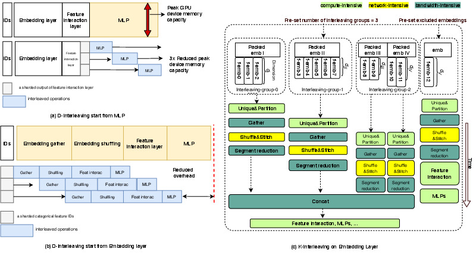
图 8. a) D-交错从 MLP 开始, 以消除 GPU 设备内存容量限制; b) D-交错从嵌入层开始, 以减少开销. c) 不同硬件资源上的填充和非填充嵌入作的 K-交错.
内核交错 (K-Interleaving) 打包机制将数百个操作转换为少量打包的操作. 然而, 来自不同嵌入表的打包操作仍会争用相同的硬件资源. 例如, 当所有 Shuffle&Stitch 操作并发启动时, 以太网带宽会限制训练吞吐量. 我们提出了一种内核交错 (K-Interleaving) 优化, 该优化在打包操作组之间建立控制依赖关系, 如图 8 所示. 为确保所谓的交错组不会受到各种硬件资源的限制, 我们首先根据处理的参数确定每个交错组的容量, 记为 Capacity g, 公式如下:
其中 RBound op 的定义与方程 2 中相同, RParam op 表示从算子的主要硬件资源训练一个参数的成本. 在此, 我们简单地将参数量视为嵌入查找和交换中的成本.
我们还可以通过按比例修改 PICASSO 中的Capacity g来改变交错组的数量. 值得注意的是, 我们允许用户指定预设的排除嵌入, 其中打包操作对其他K-交错组没有控制依赖. 例如, 当某些操作的输出 (特征嵌入) 不会与其他特征嵌入进行拼接以供下游层使用时, K-交错可以推进其下游操作.
#3.4. 缓存
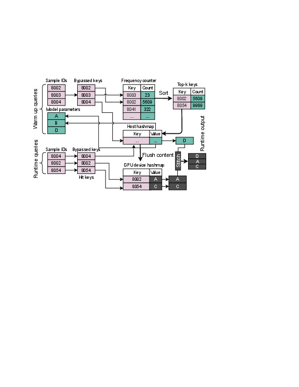
图 9. 通过 HybridHash 上的缓存方法收集嵌入向量 (例如 “Emb-8002”).
缓存是一种广泛应用的系统技术, 它利用分层内存子系统来降低内存访问延迟. 然而, 缓存的有效性, 即缓存命中率, 取决于多种因素, 如数据分布和访问模式. 在 2.2 中, 我们观察到仅有 20% 的分类特征 ID 被高频查询, 这促使我们提出一种名为 HybridHash 的优化方案. 该方案旨在消除两个硬件限制:
- DRAM具有大容量, 但受限于内存访问带宽;
- GPU设备内存具有高带宽, 但受限于有限的容量.
如图 9 所示, HybridHash 作为一个哈希表, 用于存储、获取和更新嵌入参数. 我们将 GPU 设备内存称为热存储 (Hot-storage), 将DRAM称为冷存储 (Cold-storage). 与其他基于 GPU 的哈希表解决方案不同, 我们将热存储视为一种昂贵的资源, 应避免浪费其容量. 因此, 我们将哈希表这一稀疏数据结构放置在冷存储上, 并仅将热存储作为暂存器, 用于存储和更新频繁访问的嵌入. 回顾第 2.2 节, WDL工作负载中的分类特征ID遵循一定的分布. 在预定义的预热迭代次数内, 记录从哈希表中查询的每个ID的频率是合理的. 随后, HybridHash 定期将前 k 个 (k 由热存储的大小决定) 频繁嵌入从冷存储加载到热存储, 以保留最热的分类特征 ID. 在预热步骤之后, 预期大多数 ID 查询会在热存储中命中, 而未命中的查询可由冷存储处理. 需要注意的是, 如果在预热步骤中发现热存储的容量远超嵌入表的总大小, HybridHash 会将所有数据放置在热存储上. 此外, HybridHash可扩展为多级缓存系统, 包括Intel持久内存和SSD等设备. HybridHash的算法如算法1所示. L9-12描述了在预热迭代期间收集统计信息的步骤, L14-22介绍了获取嵌入的规则, L23-26定义了更新热存储内容的程序.

#4. 实验
在本节中, 我们进行了广泛的实验以回答以下研究问题:
- 与经过计算优化的最先进通用框架相比, 通过释放硬件潜能, PICASSO 能否实现更高的吞吐量?
- PICASSO 中的软件系统优化如何影响每种硬件资源的利用率?
- PICASSO 在多样化的 WDL 模型架构和特征字段上的表现如何?
#4.1. 实验设置
我们从两个方面对 PICASSO 进行实验:
- 在公共数据集上, 将 PICASSO 与最先进框架的性能进行基准测试.
- 利用生产就绪的数据集和三个代表性模型评估 PICASSO 的设计.
表 1 总结了我们的测试平台, 包括用于性能基准测试的来自阿里云 (Gn6e) 的公共机器, 以及用于系统设计评估的本地 Tesla-V100 (EFLOPS) 集群.
测试模型与数据集:
- DLRM 是由 Facebook 提出并被 MLPerf 采用的基准模型;
- DeepFM 源自 Wide&Deep 模型, 广泛应用于工业推荐系统;
- DIN 和 DIEN 是两个利用复杂特征交互模块训练多字段分类数据的模型.
- 我们还利用 2 中讨论的三个代表性模型进行系统设计评估.
表 1. 测试平台规格 (每节点)
| 集群 | CPU | GPU | DRAM | 网络 |
|---|---|---|---|---|
| Gn6e | Xeon 8163 (96 核) | 8× Tesla V100-SXM2 (256GB HBM2) | 724GB DDR4 | 32Gbps (TCP) |
| EFLOPS | Xeon 8269CY (104 核) | 1× Tesla V100S-PCIe (32GB HBM2) | 512GB DDR4 | 100Gbps (RDMA) |
对于 基准数据集, 我们收集了:
- Criteo: 一个由 Kaggle 和 MLPerf 采用的点击率 (CTR) 数据集
- Alibaba: 一个开源的工业级 CTR 数据集.
对于系统设计评估, 我们使用阿里巴巴内部的生产数据集, 该数据集包含大量单热或多热分类特征. 这些数据集的统计信息见表 2. 数据集部署在远程服务器上, 可通过网络下载. 遵循常见的工业设置, 模型仅对整个数据集遍历一个 epoch, 并采用全精度训练以避免精度损失.
最先进的训练框架:
我们评估并比较了 PICASSO 与主流开源 WDL 训练框架的性能, 包括:
- 采用异步参数服务器 (PS) 训练策略 (CPU 上运行一个 PS, GPU 上运行多个工作节点) 的 1.15 版本 的 Tensorflow-PS (简称 TF-PS). NVLink 在此训练模式下无法工作;
- Facebook 开发的、针对 WDL 模型采用混合训练策略的 1.8 版本 的 PyTorch, 该策略使用 AllToAll 通信 (基于 NCCL). 根据大小, 面向不同特征域的嵌入表被手动放置在不同的 GPU 上;
- 在 PyTorch 分布式数据并行 (DDP) 模式下采用 Allreduce 通信的 Horovod.
我们在实验中使用一组评估指标进行综合测量:
- AUC 是评估准确性的标准 CTR 指标;
- 性能 是指训练系统的吞吐量 (每节点每秒实例数 (IPS) 和训练运行时间 (GPU 核心小时数);
- GPU SM 利用率 是指在至少一个 warp 在多处理器上处于活动状态的时间比例, 对所有 SM 取平均值;
- 带宽利用率 是指测得的网络 (PCIe / NVLink / RDMA) 带宽.
我们使用 NVIDIA 的 DCGM 来检查测试平台上设备利用率的指标.
表 2. 实验中数据集的统计信息
| 数据集 | 实例数 | 数值特征数量 | 稀疏特征字段数量 (括号内为序列特征长度) | 模型 | 嵌入维度 | 参数数量 |
|---|---|---|---|---|---|---|
| Criteo | 4B | 13 | 26 | DLRM / DeepFM | 128 | 6B |
| Alibaba | 13M | 0 | 1,207 (7 + 12×100) | DIN / DIEN | 4 | 6B |
| Product-1 | Infinite | 10 | 204 | W&D | 8–32 | 160B |
| Product-2 | Infinite | 0 | 1,834 (334 + 30×50) | CAN | 8–200 | 1T |
| Product-3 | Infinite | 0 | 584 (84 + 10×50) | MMoE | 12–128 | 1T |
表 3. 四种训练系统训练模型的 AUC
| 模型 | PIC AUC (步数) | PICASSO AUC (步数) | PyTorch AUC (步数) | TF-PS AUC (步数) | Horovod AUC (步数) |
|---|---|---|---|---|---|
| DLRM | 0.8025 (42K) | 0.8025 (7K) | 0.8024 (6K) | 0.8025 (10K) | — |
| DeepFM | 0.8007 (30K) | 0.8007 (7K) | 0.8007 (7K) | 0.8007 (8K) | — |
| DIN | 0.6331 (32K) | 0.6329 (20K) | 0.6327 (16K) | 0.6329 (24K) | — |
| DIEN | 0.6345 (32K) | 0.6344 (16K) | 0.6340 (12K) | 0.6343 (24K) | — |
#4.2. 基准评估 (RQ1)
我们首先在基准测试任务上评估了PICASSO在单个Gn6e集群节点上的性能. 我们在保持模型精度的同时, 调整各框架的 Batch Size 以实现最佳吞吐量.
精度与吞吐量. 各GPU设备对应的 Batch Size 及AUC值列于表 3 中. 对于DLRM和DeepFM, PICASSO实现了与PyTorch和Horovod相同的AUC, 且优于TF-PS的异步训练. 对于DIN和DIEN, PICASSO甚至获得了比其他框架略高的精度, 这对工业实践具有指导意义.
就吞吐量而言, 图10记录了四个框架下模型的训练墙钟时间. TF-PS在四个框架中表现最差, 归因于服务器节点和工作节点之间大量的数据交换以及PCIe拥塞. 得益于集合通信原语 (即Allreduce和AllToAll) 的使用, Horovod和PyTorch的性能相比TF-PS有了显著提升. PICASSO展现了最佳性能, 且在DIN和DIEN上的优势更为显著, 这是因为其工作负载模式相对复杂 (内存密集型和计算密集型层的混合; 且阿里巴巴数据集比Criteo数据集具有更高的稀疏性). 结果表明, 与基基准框架 (TF-PS) 相比, PICASSO令人印象深刻地将训练速度至少提升了1.9倍, 最高可达10倍.
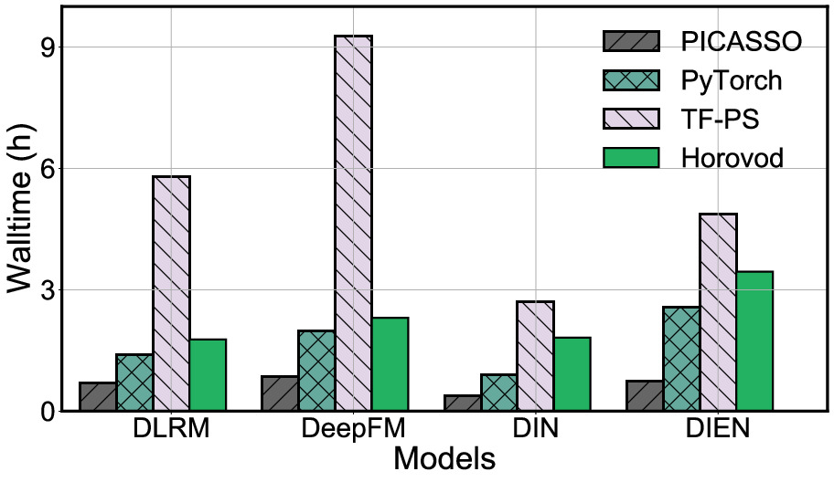
图 10. 通过比较训练系统, GPU 核心小时数中四个模型的 Walltime.
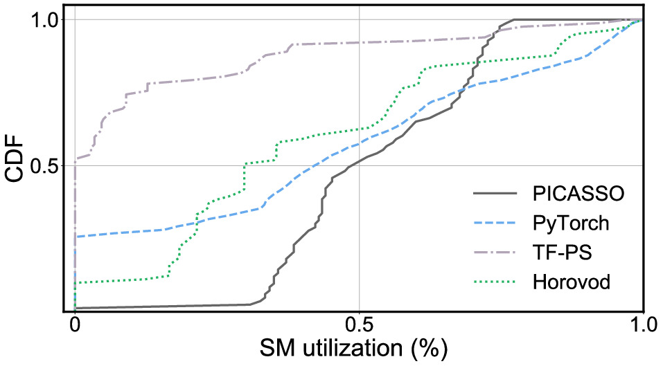
图 11. 四个比较系统在整个过程中 SM 对训练 DLRM 的利用情况的 CDF.
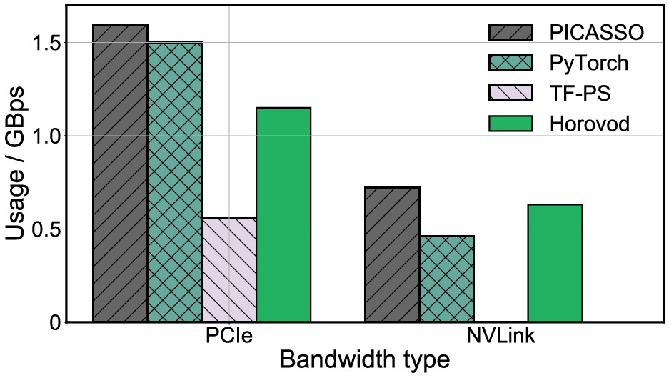
图 12. 四个比较系统对训练 DLRM 的 PCIe 和 NVLink 带宽消耗.
硬件利用率. 接着, 我们研究了训练DLRM模型时底层硬件的运行时利用率, 并在图11和图12中以10毫秒的粒度绘制了GPU SM利用率及NVLink/PCIe带宽消耗情况. 尽管其他框架优化了训练的某些阶段 (例如, PyTorch和Horovod呈现出间歇性的高GPU SM利用率), 但它们仍受制于某些瓶颈, 这从低GPU SM利用率的大面积累积分布函数 (CDF) 区域中可以看出. 相比之下, PICASSO几乎不存在低GPU SM利用率的区域, 这意味着该测试平台上的瓶颈已通过软件系统优化得到有效解决. 就带宽利用率而言, PICASSO远优于TF-PS基准, 因为它利用了集合通信原语以及通过NVLink实现的硬件一致性. 与Horovod和PyTorch相比, PICASSO仍因交错流水线而略微提升了带宽使用率. 硬件利用率的提升表明, 尽管通用框架已将计算效率推向峰值水平, PICASSO仍成功释放了底层硬件资源的潜力.
#4.3. 系统设计评估 (RQ2)
就模型架构和数据分布而言, 工业级WDL工作负载通常比基准测试工作负载复杂得多. 我们通过 W&D 研究了 PICASSO 在工业服务中的有效性,
表 4. PICASSO 消融研究
| 模型 | 配置 | PCIe (GBps) | 通信 (Gbps) | SM 利用率 (%) |
|---|---|---|---|---|
| W&D | PICASSO | 22,825 | 1.57 | 32 |
| W&D | 无打包 | 17,827 | 1.54 | 23 |
| W&D | 无交错 | 16,218 | 1.49 | 21 |
| W&D | 无缓存 | 19,264 | 1.51 | 25 |
| CAN | PICASSO | 12,218,218 | 2.59 | 62 |
| CAN | 无打包 | 8,769 | 2.55 | 45 |
| CAN | 无交错 | 7,957 | 2.02 | 43 |
| CAN | 无缓存 | 10,829 | 2.60 | 51 |
| MMoE | PICASSO | 2,546 | 2.31 | 98 |
| MMoE | 无打包 | 2,270 | 2.27 | 96 |
| MMoE | 无交错 | 1,319 | 1.87 | 64 |
| MMoE | 无缓存 | 2,401 | 2.28 | 98 |
CAN 和 MMoE 模型在工业数据集上的表现. 同时, 我们通过训练吞吐量来衡量打包、交错和缓存的细粒度贡献. 除非另有明确说明, 评估均在 EFLOPS 集群的 16 个节点上进行. 我们使用阿里巴巴 Tensorflow 中常用的异步 PS 策略作为基线. 我们还实现了不包含软件系统优化的 PICASSO, 记为 “PICASSO(Base)”, 这可以被视为一个纯混合并行训练策略框架. 图 13 展示了 IPS, 我们观察到在 CAN 和 MMoE 上实现了 4 倍的加速. 随后, 我们通过消融实验深入研究软件系统优化.
消融实验. 我们依次从PICASSO中移除软件系统优化, 以验证其对WDL任务的影响, 并在表IV中收集指标. 通过使用打包方法, 特征嵌入上的零碎操作被打包在一起, 使得IPS提高了30%, 并相应地增加了PCIe、网络和GPU SM的硬件使用率. 交错方法利用流水线通过计算密集型操作来隐藏内存访问和网络延迟. 显然, 在这三个模型中, MMoE拥有最复杂的计算工作负载, 因此从该优化中受益最多. 交错方法将MMoE的性能显著提高了93%. 这与这两个模型承受繁重计算负载的分析一致, 且PICASSO有助于在整个训练过程中扩散脉冲式的GPU使用率. 由于计算资源不足, W&D 可受益于数据交错以缓解 PCIe 和网络上的拥塞. 缓存依赖于利用输入数据的分布. 因此, 我们运行 100 步作为预热以收集统计数据, 然后将 GPU 内存上的 Hotstorage 大小设置为 1GB, 以保持每个批次内唯一 ID 的命中率高于 20%. HybridHash 通过平衡 PCIe 和 GPU 的利用率将性能提高了高达 13%.
打包的有效性. WDL 模型倾向于拥有针对多字段嵌入和特征交互的碎片化操作. 我们通过 Baseline 和 PICASSO 转储了三个模型的计算图, 操作数量和打包嵌入如表 5 所示. 统计数据显示, PICASSO 显著减少了碎片化操作, 即使交错优化补充了一定数量的操作以流水线化执行.
表 5. 计算图中的操作数量
| 模型 | 操作数量 (基线) | 操作数量 (PICASSO) | 打包嵌入数量 (基线) | 打包嵌入数量 (PICASSO) |
|---|---|---|---|---|
| W&D | 100,039 | 14,882 (14.9%) | 204 | 16 (7.8%) |
| CAN | 381,364 | 67,985 (17.8%) | 364 | 19 (5.2%) |
| MMoE | 300,524 | 75,217 (25.0%) | 94 | 11 (11.7%) |
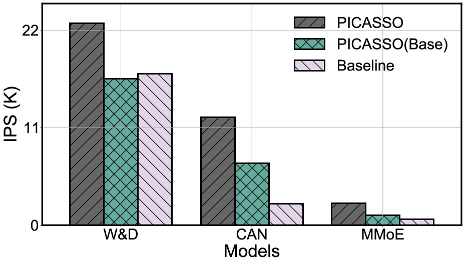
图 13. 内部集群中三个训练系统对这三个模型的训练表现.
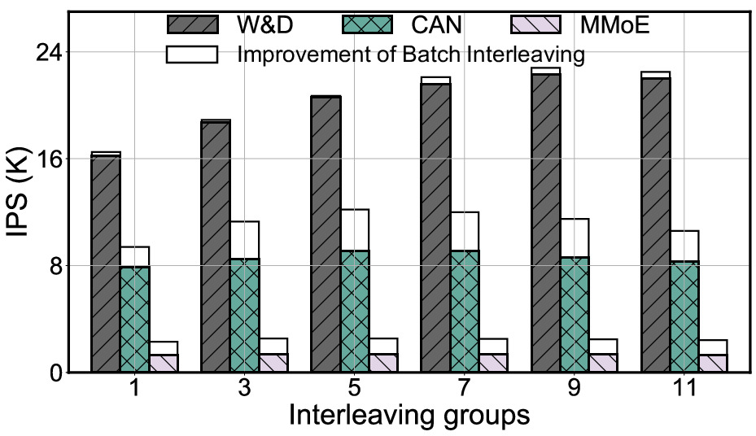
图 14. 通过使用 1 到 11 个交错组来训练表现. 这三款型号分别拥有 16、19 和 11 个填充嵌入.
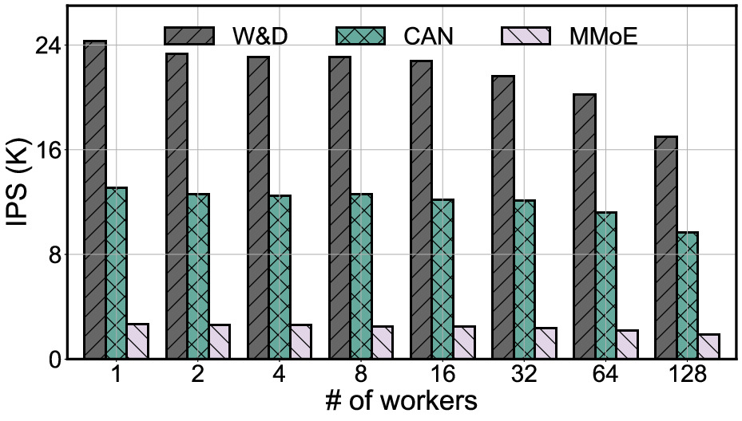
图 15. PICASSO 规模扩展的范围为 1 至 128 个集群 Worker.
交错组. 交错组的数量影响嵌入层的效率. 图14展示了通过改变K交错组数量所得到的吞吐量.
显然, 通信密集型工作负载, 即 W&D 和 CAN, 可以从增加的交错中受益, 因为打包嵌入的组合统一了每个硬件资源的使用. 我们还观察到, 批量交错对不同模型的贡献各不相同. 结果表明, 利用更多 Micro Batch 将显著提高计算密集型工作负载 (即 CAN 和 MMoE) 的性能, 通过满足 GPU 的饱和度. 这揭示了当存在充足的输入数据和硬件利用率不足时, 交错策略对 WDL 工作负载是有效的.
热存储大小. 在工业级 WDL 工作负载中, 无法预见嵌入表的大小, 因为模型需要不断处理新出现的类别特征 ID. 我们在之前的评估中将热存储的大小设置为 1GB, 以确保 20% 的命中率. 表 6 描述了通过改变热存储大小而得到的缓存命中率以及 IPS 的提升. 更大的缓存大小可以承载更多的嵌入, 但我们发现当缓存大小达到 2GB 以上时, 命中率呈现出明显的边际效应. 尽管大缓存命中了更多的 ID 查询, 但 GPU 内存的占用迫使训练在批次大小上做出妥协, 从而导致整体吞吐量略有下降. 因此, 在 WDL 工作负载中, 无需通过设置过大的缓存大小来追求高缓存命中率.
表 6. 通过改变热存储大小观察到的命中率与 IPS
| Hot-Storage | W&D Hit Ratio | W&D IPS | CAN Hit Ratio | CAN IPS | MMoE Hit Ratio | MMoE IPS |
|---|---|---|---|---|---|---|
| 256MB | 9% | -11% | 20% | -19% | 9% | -3% |
| 512MB | 18% | -5% | 28% | -10% | 16% | -1% |
| 1GB | 24% | +0% | 37% | +0% | 21% | +0% |
| 2GB | 28% | +1% | 44% | +5% | 24% | +0% |
| 4GB | 31% | -3% | 45% | +2% | 27% | -2% |
扩展. 我们将训练集群从一个 PICASSO-Executor 扩展到 128 个 PICASSO-Executor, 并在图 15 中通过 IPS 展示了性能. IPS 与 PICASSO-Executor 数量之间的相关性表明, PICASSO 在 CAN 和 MMoE 上实现了近线性扩展性, 而在 W&D 上达到了亚线性吞吐量. 这一结果意味着 PICASSO 可以分摊由 PICASSO-Executor 数量增加带来的额外通信开销, 并处理大规模的 WDL 训练.
#4.4. 适用性实验 (RQ3)
变化的特征交互. 我们进一步研究了PICASSO在具有多种特征交互模块的更大规模的工业级WDL模型上的性能. 我们选取了12个AUC预测模型, 并调整超参数以确保模型收敛. 这些模型经过轻微修改以适应Product-2数据集. 为了展示PICASSO的适应性, 我们采用内部优化的XDL作为基线, 在同步PS训练模式下训练这些模型. 这12个模型的性能列于表 7 中. 显然, 与内部优化的 XDL 框架相比, 所提出的PICASSO显著显著提高了 GPU 利用率. 这表明, 通过软件系统优化, PICASSO 能够感知硬件限制, 并针对各种 WDL 模型架构释放硬件潜力.
表 7. PICASSO与内部XDL训练12个AUC预测模型的吞吐量.
| 模型 | Batch Size | GPU SM 利用率 | IPS |
|---|---|---|---|
| LR | 20K → 36K (20K × 2) | 9 → 22 (+144%) | 12.0K → 25.9K (+115%) |
| W&D | 19K → 36K (18K × 2) | 21 → 35 (+67%) | 14.7K → 22.2K (+50%) |
| TwoTowerDNN | 12K → 36K (12K × 3) | 35 → 97 (+177%) | 4.7K → 12.1K (+160%) |
| DLRM | 10K → 30K (10K × 3) | 38 → 98 (+158%) | 3.8K → 10.4K (+171%) |
| DCN | 14K → 36K (12K × 3) | 56 → 92 (+64%) | 9.0K → 13.7K (+52%) |
| xDeepFM | 6K → 20K (5K × 4) | 45 → 98 (+117%) | 3.1K → 5.9K (+89%) |
| ATBRG | 3K → 6K (3K × 2) | 13 → 26 (+100%) | 0.8K → 1.4K (+82%) |
| DIN | 15K → 45K (15K × 3) | 34 → 80 (+135%) | 7.5K → 16.0K (+113%) |
| DIEN | 15K → 45K (15K × 3) | 29 → 75 (+159%) | 7.3K → 15.6K (+115%) |
| DSIN | 9K → 27K (9K × 3) | 40 → 93 (+133%) | 4.7K → 9.8K (+111%) |
| CAN | 12K → 48K (12K × 4) | 17 → 75 (+341%) | 3.9K → 12.1K (+210%) |
| STAR | 2K → 8K (2K × 4) | 32 → 98 (+206%) | 0.6K → 2.0K (+215%) |
表 8. CAN在合成数据集上通过改变特征字段数量的性能
| 系统 | 指标 | 1 | 2 | 3 | 4 | 5 | 6 | 7 | 8 |
|---|---|---|---|---|---|---|---|---|---|
| PICASSO | 原始值 | 12.20 | 6.14 | 4.13 | 3.13 | 2.50 | 2.09 | 1.82 | 1.61 |
| PICASSO | AP | 12.20 | 6.10 | 4.07 | 3.05 | 2.44 | 2.03 | 1.74 | 1.53 |
| PICASSO | 增量 | 0.0% | +0.6% | +1.7% | +2.5% | +2.6% | +2.7% | +4.3% | +5.3% |
| XDL | 原始值 | 2.40 | 1.18 | 0.75 | 0.56 | 0.42 | 0.36 | 0.31 | 0.25 |
| XDL | AP | 2.40 | 1.20 | 0.80 | 0.60 | 0.48 | 0.40 | 0.34 | 0.30 |
| XDL | 增量 | 0.0% | -1.5% | -6.8% | -6.1% | -13.1% | -9.6% | -10.3% | -15.3% |
增加特征字段. 我们通过改变特征字段的数量来展示PICASSO的性能. 由于目前我们不运营需要处理数千个特征字段业务, 我们通过复制Product-2的特征字段来构建一个合成数据集. 因此, 数据源中的特征字段数量变为364的整数倍. 相应地, 我们复制特征交互层以处理该合成数据集. 特征交互层的输出被拼接在一起, 输入到一个共享MLP中. 表 8 展示了PICASSO和内部优化的XDL的IPS, 以及基于等差数列 (AP) 计算的理论IPS. 尽管底层硬件资源的需求随特征字段数量的增加而增加, 但由于对零散操作的打包, PICASSO的性能略优于AP. 相比之下, PS基线因大量特征字段及其组成的特征交互导致海量操作, 从而相比AP表现出显著的IPS下降.
讨论. 评估结果表明, PICASSO成功释放了硬件资源的潜力, 其中PICASSO通过统一硬件使用来实现高整体硬件利用率 (RQ2), 并为具有不同属性的 WDL 模型提供多样化的优化 (RQ3). 在训练中采用超大 Batch Size 需要某些辅助方法 (例如, 全局批量归一化, Lamb 优化器), 这些方法可以通过在 TensorFlow 中的实现应用于 PICASSO. 显然, 如果我们部署定制化硬件以增强特定的硬件资源, 或者如果特定的 WDL 任务对精度损失机制导致的准确率损失表现出较高的容忍度, 那么 PICASSO 的性能肯定会进一步提高.
表 9. PICASSO 在阿里云上的性能表现
| 系统 | 平均任务实际运行时间 (h) | GPU SM 利用率 (%) | 带宽 (Gbps) |
|---|---|---|---|
| XDL | 8.6 | 15 | 1.412 (TCP) |
| PICASSO | 1.4 | 75 | 6.851 (TCP + RDMA) |
#5. 生产环境部署
我们在Tensorflow之上实现了PICASSO. 自2020年10月以来, 它已部署在我们的本地集群中, 用于服务线上和线下WDL任务的业务, 包括信息检索、广告竞价、推荐和搜索排序. 自部署PICASSO以来, 训练吞吐量得到了显著提升, 并在多次重点促销活动中取得了令人瞩目的性能表现. PICASSO采用了内部复杂的调度和故障恢复策略以实现稳健的训练, 这些内容超出了本文的讨论范围.
训练最先进的 WDL 设计时的算术计算开销仍然非常大. 得益于流行的计算机视觉 (CV) 和自然语言处理 (NLP) 训练加速方法, 我们将最新的解决方案 (如 GPU 加速库 (例如 CUTLASS 和 CuDNN)、算子级图替换、编译器优化以及量化通信) 应用于 PICASSO. 我们还实现了拓扑感知通信, 以避免来自同一节点的 GPU 设备上的 IO 任务争用有限的 NIC 资源. 这些加速技术与 PICASSO 的优化是正交的. 我们为用户提供了灵活的接口, 以便在调优其设计时调用这些方法. 其他新兴技术可以通过 Tensorflow 生态系统集成到 PICASSO 中.
我们配备了一个生产训练集群, 每个工作节点配备一块Tesla-V100 GPU, 该集群每天运行数百个WDL工作负载. 这些工作负载由于输入特征、嵌入维度、特征交互模块和 MLP 形状的不同, 呈现出显著差异的训练强度. 我们记录了从2021年6月1日至2021年11月15日期间成功训练任务的作业统计数据. 为了进行比较, 我们在另一个具有可比工作负载类型的生产集群中部署了此前使用的XDL. 表 9 中的结果显示, PICASSO平均带来了约6倍的性能加速, 并有助于提高底层硬件的利用率. 吞吐量加速的效益将每日持续交付的延迟平均缩短了 7 小时. 我们进一步探查了受监控集群中的几个代表性模型 (具有完全不同的模型架构和数据分布), 并展示了在 128 块 Tesla-V100 上训练一年累积的 PB 级数据所需的墙时, 如表 10 所示. 统计数据显示, PICASSO 将千亿级参数的模型训练时间从一个月缩短到了 2 天. 此外, 对于具有万亿级参数的 WDL 模型 (我们业务中满足实时推理吞吐量需求的当前最大模型之一), 训练在九天内完成, 而基线框架估计需要占用资源三个多月. 这种训练加速对于提供高 WDL 业务价值的最新机器学习/深度学习趋势至关重要.
表 10. 训练一年累积数据所需的墙时 (GPU 核心小时) ("P"表示预测的墙时)
| 系统\模型规模 | ∼ 1B | ∼ 10B | ∼ 100B | ∼ 1T |
|---|---|---|---|---|
| XDL | 2,072 | 11,013 | 88,129 (P) | 323,480 (P) |
| PICASSO | 747 | 2,285 | 6,091 | 27,256 |
#6. 相关工作
我们将针对训练WDL作业的前沿研究方法归纳为以下三类:
硬件定制. 对于具有高业务价值的特定WDL工作负载, 定制硬件本身以实现卓越的性能和吞吐量是具有效益的.
- AIBox/PaddleBox 利用非易失性内存, 将训练规模从包含数百个CPU的MPI集群大幅缩减至配备8个GPU的单机.
- HugeCTR/Merlin 是运行在NVIDIA DGX-1/DGX-2超级节点上的定制框架, 这些节点配备了名为NV-Switch的高端互连技术.
- Zion 和 RecSpeed 通过增加更多网卡和RoCE来缓解I/O瓶颈, 从而针对DLRM 及其变体定制节点规格.
然而, 面对WDL设计的快速演变, 硬件定制依然成本高昂, 且会造成资源浪费. 此外, 基于定制硬件构建的训练系统难以在云端进行弹性扩展.
子系统优化 旨在诊断特定瓶颈并提升特定工作负载的性能. 例如,
- BytePS 中的通信协议加速了参数服务器 (PS) 策略中的数据交换.
- Kraken 开发了内存高效的表结构以存储嵌入层的参数.
- ScaleFreeCTR 利用GPU加速存储在DRAM中的参数的嵌入查找.
- Het 在嵌入更新中引入了 staleness, 这适用于具有小规模本地嵌入表的WDL设计.
由于未能充分感知 WDL 的稀疏操作或密集计算特性, 这些优化措施往往错失系统性提升整体性能的机会; 而诸如 staleness 等有损精度的操作则会对电商WDL模型造成损害.
通用DNN训练优化. 目前已提出多种针对 CV 和 NLP 等领域密集模型的训练框架. 这些框架为训练过程中的工作负载拆分和流水线处理提供了精细的策略.
- [megatron-lm-training-multi-billion-parameter|Megatron] 加速了NLP工作负载中的Transformer模块.
- GPipe 在小批次上实现了流水线处理, 而 Pipedream 则通过权重缓存进一步填补了前向传播和反向传播之间的气泡.
- GShard 依赖于编译方法来对参数和激活值进行分片.
遗憾的是, WDL模型通常对数值精度和梯度 staleness 较为敏感, 且WDL工作负载在动态形状数据上的算子数量远多于CV和NLP模型. 因此, 这些通用DNN训练优化可能并不适用于工业规模的WDL工作负载.
#7. 结论
在本文中, 我们介绍了PICASSO, 这是一个基于TensorFlow的深度学习训练系统, 旨在通过感知模型架构和数据分布, 加速在商用硬件上对WDL模型的训练. 通过调研阿里巴巴云上的代表性工作负载, 我们设计了一个优势训练框架, 并提供了感知工作负载的软件优化: 1) 打包嵌入表和后续操作, 以减少对以GPU为中心的训练不友好的碎片化操作; 2) 交错嵌入层和特征交互, 以将脉冲式使用扩散到整个训练过程中; 3) 缓存频繁访问的分类ID, 以加速重复的嵌入查询. 在阿里巴巴云的产品部署表明, 一个通过一年PB级数据训练的万亿参数WDL模型可以在27,256 GPU核心小时内高效完成训练, 将训练成本显著降低了12倍. PICASSO有助于将每日持续交付的延迟缩短7小时, 这对最先进的推荐系统至关重要.
#参考资料
- PICASSO：面向搜推广业务的工业级稀疏训练引擎